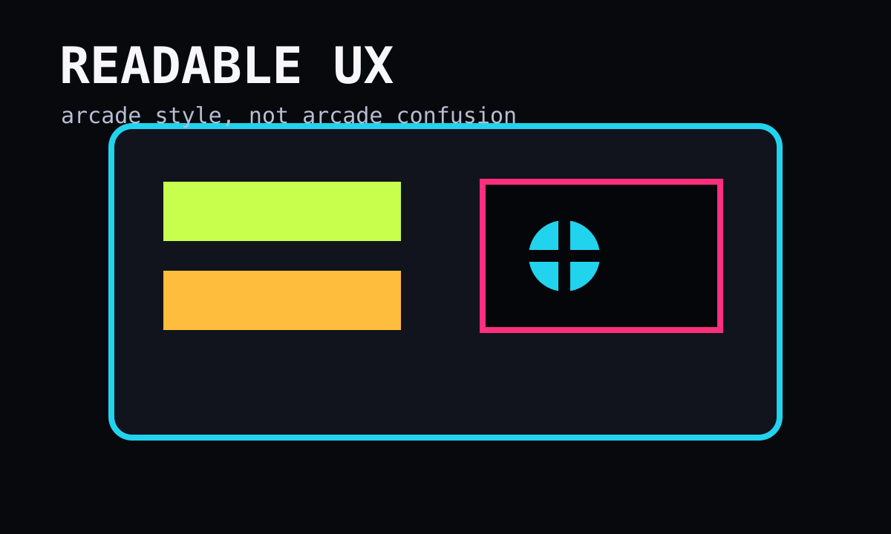

guide · Accessibility
Games Need Better UX Before You Press Start
Modern players expect clearer controls, readable interfaces and options that reduce friction before the game even starts.

TL;DR
Accessibility is not extra. It is basic UX.
Why gamers care
If controls, contrast or menus are confusing, players bounce.
Move
Look for clear controls, readable pages and low-friction player flows.
The short version
A retro site can look arcade without being hard to read. The vibe is only good if people can actually use it.
What matters first
Readable titles, obvious buttons, clear player modes, keyboard navigation and honest warnings about ads or external providers.
For Arcade World
Every game card should answer: can I play it, where does it open, will it show ads, and can I save it?
Sources and further reading
Keep exploring
Open the Game Room or visit the latest stories.